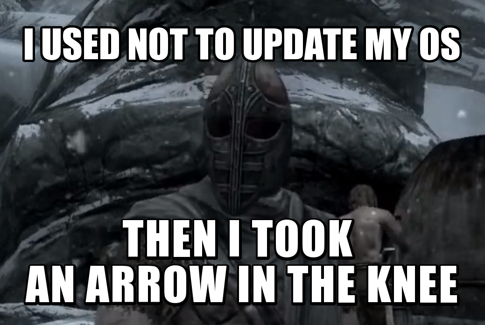

Digital Contraptions Imaginarium (DICO.IM) won't fix your knee, but can help you address any issue you're dealing with, at the crossings of
data, people and technology
. Get in touch at
info@dico.im
or
@dicoim
, or call Gianfranco on +44 7595 041806.